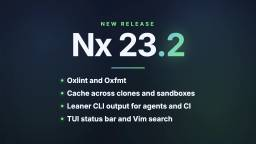
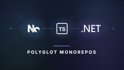

Nx Blog
https://nx.dev/blog
Latest news, updates, and stories from the Nx & Nx Cloud team.
フィード

Nx 23.2 Is Here: Oxlint, Oxfmt, Leaner CLI Output and Better Caching
Nx Blog
The Oxc toolchain arrives in Nx. Plus leaner task output, Nx running inside agent sandboxes, and a cache shared across worktrees and repository clones.
3日前

Full-Stack Type Safety Across Languages with @nx/dotnet
Nx Blog
Generate an OpenAPI document from a .NET API at build time, generate a TypeScript client from it, and let the Nx task graph keep the two in sync.
5日前

Exploring Polyglot Monorepos with Nx, TanStack and Rust
Nx Blog
How to add Rust and the Topcoat web framework to an existing pnpm and Nx monorepo: one task graph, shared caching, and distributed CI across both stacks.
10日前
Building Interactive Agentic Code Reviews in 20 Minutes
Nx Blog
Traditional code review cannot keep up with AI-generated code. An interactive, agentic review workflow increases throughput while preserving human judgment.
25日前
We Simplified the Nx CI Configuration
Nx Blog
Nx Cloud can now read your pipeline configuration from a central config file.
1ヶ月前
A Software Factory Is a Workflow, Not a Product. Build One in 20 Minutes.
Nx Blog
A software factory automates a well-understood development workflow. Here are the capabilities it needs, how to build one, and why treating it as a product is a mistake.
1ヶ月前
Your CI Just Got a Vitals Monitor: Resource Usage for Every Org
Nx Blog
Resource usage is now available to every Nx Cloud organization, on by default for new ones.
1ヶ月前
The Monorepo Advantage for AI Agents
Nx Blog
AI agents underperform not because of the models but because of the architecture around them. Repo boundaries limit what agents can read, what they can write, and what they can remember.
1ヶ月前
The Renaissance, Mechanical Sympathy, and AI Agents
Nx Blog
Cheaper paper gave Renaissance artists more room to experiment. AI agents could do the same for software, if developers preserve enough mechanical and software sympathy to judge what agents produce.
2ヶ月前
Nx 23.1 Is Here: Per-Run Performance Reports, TypeScript 6, and Angular 22
Nx Blog
Everything that landed in Nx 23.1: a performance report at the end of every run, TypeScript 6, Angular 22 support, mouse support in the terminal UI, and more flexible target defaults.
2ヶ月前
Agentic Memory: Why Code Is Fundamentally Different
Nx Blog
Agentic memory can mean many different things, and it is not easy to figure out what a particular product does. In this post we will look at a few core attributes of memory which can help with classifying different solutions. We will also see why code is fundamentally different from other domains.
2ヶ月前
Keep Shipping Through Docker Hub Outages and Rate Limits
Nx Blog
Docker Hub outages and 429 Too Many Requests rate limits break CI pipelines. A read-through cache is the fix the infrastructure vendors recommend, and Nx Cloud offers it for your agents.
2ヶ月前
Announcing Polygraph: A Meta-Harness for Maximum Agent Autonomy
Nx Blog
Agents hit two walls: they are stuck in one repo, and they start every session blank. Polygraph is an agent-agnostic meta-harness that removes both, so your agents can work autonomously across your whole organization.
2ヶ月前
Meta Harnesses, Agents, and Lessons from the Framework Wars
Nx Blog
The framework wars taught us that the winning layer often does less. The same pattern is emerging for AI agents, where narrow agents need meta harnesses above them.
3ヶ月前
Nx 23: 4x Faster Nx Agents, Agentic Nx Migrate, improved targetDefaults, .Net GA
Nx Blog
Nx 23 brings a smarter multi-major nx migrate, performance wins across the local engine and Nx Cloud agents, native Node.js TypeScript stripping and V8 compile cache on by default, more precise target configuration, and a big cleanup of deprecated generators, executors, and APIs.
3ヶ月前
Can You Trust Your Build Cache?
Nx Blog
Your build cache is a trust boundary. When you cannot trust it, you ship broken artifacts downstream.
3ヶ月前
Nx Agents, now 4x faster & 30% cheaper than GitHub Actions
Nx Blog
Nx Cloud recently shipped optimized resource classes and Continuous Assignment for Nx Agents. Benchmarked against GitHub Actions on a large monorepo, wall-clock time dropped 74% and cost per run fell 30%.
3ヶ月前
Postmortem: Nx Console v18.95.0 supply-chain compromise
Nx Blog
Full postmortem of the malicious Nx Console v18.95.0 published to Visual Studio Marketplace and Open VSX on 2026-05-18, originating from the TanStack npm supply-chain compromise that exfiltrated a contributor's gh CLI OAuth token seven days earlier.
4ヶ月前
Shift Left Isn't Working: Because We're Shifting the Wrong Thing
Nx Blog
Most teams shift left by adding scanners and gates after code exists. The real shift is encoding security, quality, and compliance as inputs to planning.
4ヶ月前
Making It Easier to Import Projects Into Your Monorepo
Nx Blog
AI agents make importing existing projects into an Nx monorepo easier: `nx import` does the heavy lifting while the agent handles workspace-specific gaps.
4ヶ月前
Nx 22.7 Is Here: Task Sandboxing, 7x Less Memory, and Worktree-Aware Caching
Nx Blog
Everything that landed in Nx across 22.4 through 22.7: task sandboxing, a 7x reduction in daemon memory, worktree-aware caching, agentic mode improvements, and more.
4ヶ月前
Self-Healing CI Now Suggests What to Auto-Apply
Nx Blog
Nx Cloud now recommends which tasks are safe to auto-apply in Self-Healing CI, based on your CI history and verification success rate.
4ヶ月前
Deploying a PNPM Monorepo to Cloudflare Pages
Nx Blog
Deploy apps from a pnpm or npm workspace to Cloudflare Pages with one GitHub Actions workflow, using Nx as the task scheduler to rebuild only what changed.
5ヶ月前
Sharing Tailwind CSS Styles Across Apps in a Monorepo
Nx Blog
Share Tailwind v4 design tokens across multiple apps in a pnpm + Nx monorepo using a shared styles package and automated @source directives.
5ヶ月前
How SiriusXM Stays Competitive by Iterating and Getting to Market Fast
Nx Blog
How SiriusXM's commerce team uses a composable 1,400-project Nx monorepo to rapidly assemble and ship new checkout experiences, saving 61+ days of compute monthly with an 82% cache hit rate.
6ヶ月前
Agentic Experience Is the New Developer Experience
Nx Blog
How we redesigned Nx CLI commands like nx import, nx init, and create-nx-workspace to work seamlessly with AI agents, and the AX principles behind the changes.
6ヶ月前
Nx Joins the Linux Foundation and the Agentic AI Foundation
Nx Blog
Nx joins the Linux Foundation and Agentic AI Foundation (AAIF) to help shape open standards for AI-powered development. Learn how the intersection of agentic AI and build tooling will transform software development workflows, and why Nx is committing to open collaboration with Anthropic, AWS, Google, and Microsoft to build the future of autonomous AI agents in developer tooling.
6ヶ月前
A Monorepo Is NOT a Monolith
Nx Blog
Common objections to monorepos debunked: they are not monoliths, they scale, and they work great with AI.
6ヶ月前
Why we deleted (most of) our MCP tools
Nx Blog
How the shift from MCP tools to agent skills changed the way AI assistants work with Nx monorepos — and why MCP still matters.
7ヶ月前
Teach Your AI Agent How to Work in a Monorepo
Nx Blog
Nx ships agent skills that teach AI coding assistants how to navigate, build, and generate code in your monorepo.
7ヶ月前
How Broadcom stays efficient and nimble with monorepos
Nx Blog
How Broadcom unified 177+ projects in a monorepo with Nx, achieving 70% cache hit rates and saving 361 days of compute monthly while scaling development across their entire organization.
7ヶ月前
Why Monorepos are King in the Age of AI
Nx Blog
Monorepo architecture has evolved significantly in the past few years, yet the landscape remains confusing with inconsistent definitions, rapidly changing tooling, and implementation patterns that vary wildly across organizations. Meanwhile, teams adopting AI coding assistants are discovering that modern monorepo tooling is uniquely suited to solve the exact coordination challenges they're now facing. For engineering leaders navigating this rapidly transforming space, understanding the advantages of monorepo capabilities can unlock substantial velocity gains (even if a full migration is not in the cards).This webinar will provide a clear framework for understanding monorepos in 2026, cutting through the noise to explain how they deliver measurable impact. Particularly for organizations working to ship at AI-accelerated speeds.
7ヶ月前
Nx 2026 Roadmap: Expanding Agent Autonomy, Improving Performance, Better Polyglot and More
Nx Blog
Explore the Nx 2026 roadmap featuring expanded agent autonomy, self-healing CI evolution, synthetic monorepos, improved task distribution, polyglot expansion, and more.
7ヶ月前
End to End Autonomous AI Agent Workflows with Nx
Nx Blog
Learn how Nx bridges the gap between local AI agents and CI, enabling fully autonomous development workflows with the ci-monitor skill and Self-Healing CI.
7ヶ月前
Autonomous Agents at Scale
Nx Blog
As AI agents become more autonomous, writing code is no longer the constraint. The organizations that win will be the ones where more work can be delegated to agents running uninterrupted.
8ヶ月前
Scaling 700+ Projects: How Nx Became a 'No-Brainer' for Caseware
Nx Blog
Discover how Caseware unified 700+ projects into one monorepo, achieved a 93% cache hit rate, and saves 181 days of compute weekly with the Nx platform.
8ヶ月前
Configure Tailwind v4 with Angular in an Nx Monorepo
Nx Blog
Learn how Tailwind CSS v4 scanning works with Angular in Nx monorepos, why you may have bloated CSS, and how to optimize it with @source directives and Nx Sync Generators.
8ヶ月前
The Missing Multiplier for AI Agent Productivity
Nx Blog
Discover why AI agents underperform in polyrepos and how Nx monorepos unlock 30% productivity gains. Learn why architecture matters for AI agent success.
8ヶ月前
A Year of Nx Webinars
Nx Blog
Catch up on a year of Nx webinars covering CI optimization, AI-assisted development in monorepos, and practical strategies for faster builds. All recordings available free.
8ヶ月前
Wrapping Up 2025
Nx Blog
In 2025, Nx became a unified Build Intelligence Platform combining build systems, CI orchestration, and AI integration. Learn about what we shipped in 2025, and what's coming in 2026.
8ヶ月前
Nx 22.3 Release: Angular 21 Support, tsgo Compiler, and Prettier v3
Nx Blog
Nx 22.3 brings Angular 21 support, experimental tsgo compiler integration, and long-awaited Prettier v3 compatibility.
9ヶ月前
Nx Cloud Release: Agent Resource Usage
Nx Blog
Stop guessing why your CI agents fail. Agent Resource Usage in Nx Cloud delivers task-level CPU and memory visibility to debug issues and optimize infrastructure.
9ヶ月前
Nx Platform Outperforms DIY Cache by 5x
Nx Blog
Benchmarks reveal Nx Platform outperforms DIY cache by 3-5x through AI-powered self-healing CI that automatically fixes broken PRs, reduces developer interruptions by 40%, and delivers 30-40% faster build times.
9ヶ月前
An Nx Carol: Past, Present, and Future of Your Monorepo
Nx Blog
Join us for a special year-end webinar where we’ll take you on a journey through Nx’s past, present, and future to explore the evolution of Nx and what’s coming next.
9ヶ月前
Nx 22.1 Release: Terminal UI on Windows, Storybook 10, Vitest 4, and more!
Nx Blog
Nx 22.1 brings Terminal UI to Windows, Storybook 10 support, a dedicated Vitest plugin with atomizer support, and more!
9ヶ月前
The Compounding Effect: How Nx Features Multiply Performance Gains
Nx Blog
Remote caching delivers such dramatic improvements that many teams stop there, thinking they've maximized their investment. But the real bottleneck isn't just slow task execution—it's the time spent babysitting PRs through flaky test failures and manual reruns. Cache speeds up your tasks, but it can't eliminate the interruptions that keep developers waiting for green builds.
10ヶ月前
10 Monorepo Myths Debunked: Separating Fact from Fiction
Nx Blog
Explore the most common misconceptions about monorepos and learn the truth behind the myths. From performance concerns to scaling limitations, we tackle the biggest obstacles to monorepo adoption.
10ヶ月前
Nx Cloud Release: Enterprise Task Analytics
Nx Blog
Eliminate CI guesswork with Enterprise Task Analytics. Identify performance regressions, prioritize flaky task fixes, and make data-driven decisions about workspace health—all with graph-powered insights only Nx can provide.
10ヶ月前
Watch and Rebuild Storybook Dependencies with Nx
Nx Blog
Learn how to set up automatic rebuilding of buildable library dependencies in your Storybook setup using Nx workspace watching for a seamless developer experience.
10ヶ月前
Book - React for Enterprise: Timeless Architecture for Enterprise Apps
Nx Blog
Learn how to bring order, automation, and long-term velocity to large React codebases with the new React Enterprise book by Przemysław Nowak from Brainly, written in collaboration with Nx.
10ヶ月前